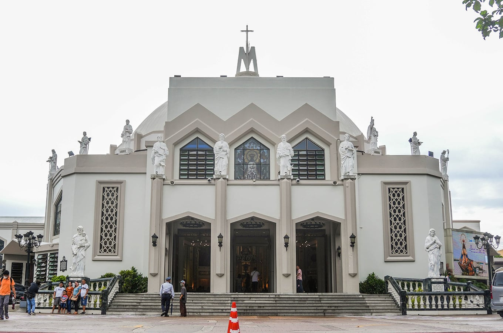
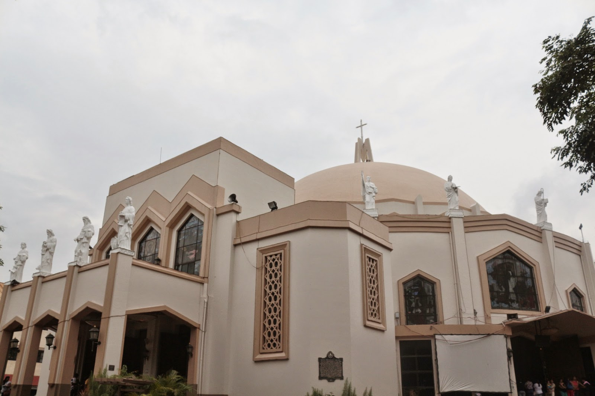
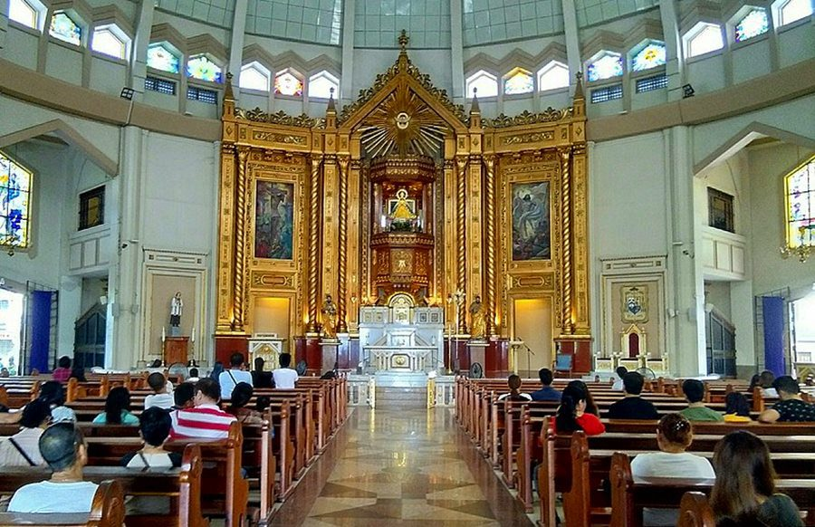

Location:
P. Oliveros St., Antipolo, Rizal.
Best for: Pilgrims, History Lovers, and Foodies.
Vibe: Sacred, Bustling, and Culturally Rich.

Antipolo Cathedral
A Sanctuary of Faith, Tradition, and Safe Travels.
The Antipolo Cathedral is the spiritual heart of the province, home to the centuries-old statue of the Our Lady of Peace and Good Voyage. It is an international shrine that has drawn millions of devotees for over 400 years.
P. Oliveros St., Antipolo, Rizal.


